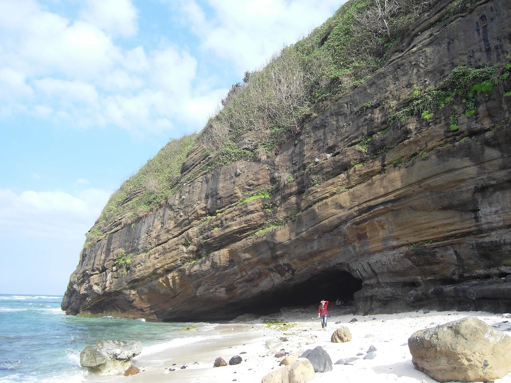

Gỏi tỏi Lý Sơn
Lá tỏi non trộn tôm, thịt ba chỉ và đậu phộng – món chỉ có trên đảo.
Ảnh minh họa: Tỏi cô đơn (tỏi một nhánh)
Hòn đảo núi lửa với những cánh đồng tỏi xanh mướt, vách đá bazan dựng đứng và nước biển trong vắt ở Đảo Bé. Lý Sơn còn là nơi lưu giữ lễ Khao lề thế lính Hoàng Sa – ký ức thiêng liêng về những người lính bảo vệ biển đảo.
Đang tải thời tiết...
Bấm vào một tháng để xem có nên đi không
Học sinh nghỉ hè, các bãi biển đông nhất năm.
Đi giữa tuần và đặt phòng sớm để có giá tốt.
Mưa lớn, có thể ngập lụt và bão; phố cổ Hội An, Huế có thể ngập.
Theo dõi dự báo, chọn vé/phòng hủy linh hoạt; tàu ra đảo có thể tạm dừng.
Lễ theo âm lịch đổi ngày dương mỗi năm – kiểm tra lịch chính thức trước khi đi.
Lá tỏi non trộn tôm, thịt ba chỉ và đậu phộng – món chỉ có trên đảo.
Ảnh minh họa: Tỏi cô đơn (tỏi một nhánh)Ốc bắt trên rạn đá núi lửa, luộc sả hoặc nướng mỡ hành.
Ảnh minh họa: Ốc nướngRong mứt trộn gỏi hoặc nấu chè mát lành.
Ảnh minh họa: Rong biểnNhum (cầu gai) tươi nấu cháo ngọt béo.
Ảnh minh họa: Nhum biển (cầu gai)Gỏi tỏi, ốc cừ, hải sản nướng
Trung tâm xã An Vĩnh, Lý Sơn Cập nhật 09/2026 Báo saiCá mú, tôm hùm, cháo nhum
Đường bờ kè An Vĩnh, Lý Sơn Cập nhật 09/2026 Báo saiỐc, rong biển, cá nướng trên Đảo Bé
Đảo Bé (xã An Bình) Cập nhật 09/2026 Báo saiChè rong biển mát lạnh
Xã An Hải, Lý Sơn Cập nhật 09/2026 Báo saiBánh mì, cháo cá bữa sáng
Chợ An Vĩnh, Lý Sơn Cập nhật 09/2026 Báo saiCua huỳnh đế, tôm hùm
Bờ kè An Vĩnh, Lý Sơn Cập nhật 09/2026 Báo saiBánh xèo mực, bánh căn
Xã An Hải, Lý Sơn Cập nhật 09/2026 Báo saiCá mú nướng, gỏi cá
Xã An Hải, Lý Sơn Cập nhật 09/2026 Báo saiGiá tham khảo mỗi người. Bấm địa chỉ để mở Google Maps xem giờ mở cửa và đánh giá mới nhất.
Vòm đá tự nhiên in bóng mặt trời lặn xuống biển.
Miệng núi lửa cũ – ngắm toàn cảnh đảo và cánh đồng tỏi.
Tắm biển, lặn ngắm san hô ở bãi Hang, nước trong như pha lê.
Chùa trong hang đá và di tích đội hùng binh Hoàng Sa.
Tự gợi ý theo điểm đến và tháng đi (chọn ngày khởi hành ở phần Lịch trình để đổi tháng). Đánh dấu để ghi nhớ món đã chuẩn bị.
Thấy giá vé, giờ mở cửa hay quán đã thay đổi? Báo sai
400k–1tr / đêm
Gần cảng tàu, chợ đêm, chùa Hang.
300k–700k / đêm
Yên tĩnh, gần cánh đồng tỏi và hang Câu.
250k–500k / đêm
Ngủ lại đảo nhỏ, nước biển trong nhất.
Bay tới sân bay Chu Lai (VCL) hoặc tàu hỏa tới ga Quảng Ngãi, đi xe ~40 phút ra cảng Sa Kỳ, rồi tàu cao tốc ~30 phút ra đảo.
| Từ Hà Nội |
|
|---|---|
| Từ Đà Nẵng |
|
| Từ TP. Hồ Chí Minh |
|
Thời gian ước tính lúc di chuyển, giá một chiều / người mức tiết kiệm – tham khảo. Phương án in đậm là gợi ý.
Giá phòng tham khảo cho 2 người/đêm, cao hơn vào lễ Tết và cuối tuần. Việt Travel không nhận hoa hồng từ các trang đặt chỗ.
Việt Travel · Quảng Ngãi · Thời điểm đẹp: Tháng 3 – 8
Chùa Hang, cổng Tò Vò – chờ hoàng hôn.
Dạo phố đêm một chút rồi về nơi ở nghỉ ngơi
Leo đỉnh Thới Lới ngắm bình minh và miệng núi lửa.
Âm Linh Tự, Nhà trưng bày Hải đội Hoàng Sa kiêm quản Bắc Hải.
Hải sản tươi và cháo nhum.
Dạo phố đêm một chút rồi về nơi ở nghỉ ngơi
Mang theo bánh mì, xôi nếu khởi hành sớm
Đi cano ra Đảo Bé, tắm biển bãi Hang.
Lặn ngắm san hô, đi bộ vòng đảo nhỏ.
Dạo phố đêm một chút rồi về nơi ở nghỉ ngơi
Kết thúc tour: trả phòng, mua đặc sản và di chuyển về.
Ăn sáng tại nơi ở (thường đã gồm trong giá phòng)
Cột cờ Tổ quốc, mua tỏi cô đơn làm quà.
Dạo chợ đêm hoặc phố ẩm thực để chọn món ăn tối
Nướng hải sản bên bờ kè.
Dạo phố đêm một chút rồi về nơi ở nghỉ ngơi
Kết thúc tour: trả phòng, mua đặc sản và di chuyển về.
Ăn sáng quán bình dân đông người địa phương gần nơi ở
Cơm trưa bình dân gần điểm tham quan
Thăm khu chứng tích Sơn Mỹ, ăn cá bống sông Trà.
Ăn tối gần nơi ở – chọn quán đông khách địa phương
Về Quảng Ngãi hoặc Đà Nẵng.
Kết thúc tour: trả phòng, mua đặc sản và di chuyển về.
Chi tiết mức tiết kiệm
Chi tiết mức thoải mái
Chi tiết mức tiết kiệm
Chi tiết mức thoải mái
Chi tiết mức tiết kiệm
Chi tiết mức thoải mái
Chưa gồm vé máy bay/tàu xe tới Đảo Lý Sơn. Giá tham khảo, thay đổi theo mùa.
Bảng giá vé & giờ mở cửa các điểm tham quan ở Đảo Lý Sơn
Muốn đi nhiều nơi trong một chuyến? Ghép Đảo Lý Sơn với các điểm đến khác.
Chia sẻ trải nghiệm của bạn
Ảnh từ người đọc
Chưa có ảnh nào – hãy là người đầu tiên chia sẻ khoảnh khắc ở Đảo Lý Sơn!
Gửi ảnh của bạn